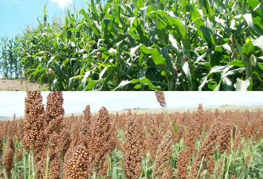

UBICACIÓN: El mapa general de México señala que el municipio de Acaponeta se encuentra en la región norte del estado de Nayarit. También señala que se encuentra situado entre las coordenadas extremas 22° 38' y 22° 17' latitud norte del trópico de cáncer y 104° 54' y 105° 37' longitud oeste del meridiano de Greenwich. El municipio de Acaponeta se encuentra ubicado a una altitud promedio de unos 30 metros sobre el nivel del mar. Está constituído por una extensión territorial de 1,667.7 kilómetros cuadrados. Territorialmente colinda al norte con lugares como el estado de Sinaloa, el municipio de Huajicori y el estado de Durango, al sur con Nayar, Rosamorada y Tecuala, al oriente con El Nayar y el estado de Durango y al poniente una vez más con el municipio de Tecuala y con el estado de Sinaloa. En cuanto a otros datos estadísiticos, el Instituto Nacional de Estadística y Geografía (INEGI) señaló que los resultados del conteo de población del 2010 en el municipio de Acaponeta, fueron que dicho municipio cuenta con una población total de 36,581.
HISTORIA:La parte histórica que posee el municipio de Acaponeta, nos permite remontarnos a la época cuando llegaron los españoles al territorio mexicano con la finalidad de conquistar el país entero, lo cual se realizó poco a poco ante las acciones armadas que hicieron en las regiones, en donde específicamente en Acaponeta llegaron los españoles que estuvieron comandados por Nuño de Guzmán en el año de 1530, en cuyo lugar se encontraban varias grupos de indígenas de origen Coras. Al finalizar el periodo prehispánico, la región de Acaponeta pertenecía al señorío Aztatlán y ahí vivieron los Totorames, quienes tenían sometida a la población de las etnias Tepehuanes y Coras, porque en cada zona había un grupo de personas que tenían más poder sobre otras, quienes trataban de implementar sus propias ideologías en la población. Cuando todos fuerons sometidos de una forma muy brusca, Nuño de Guzmán se enfocó en reconstruir toda la zona, por lo que las primeras acciones que se realizaron fue la construcción de diversas casas, se hizo la repartición de las tierras entre los conquistadores españoles, además de otras que se les dieron a los indígenas con la finalidad de trabajarlas, en donde las personas de poder fueron llamadas como amos y eran los que daban las órdenes a los demás. Guzmán fue la persona que dio plena libertad a las autoridades eclesiásticas con la finalidad de que fueran las órdenes religiosas las encargadas de evangelizar a las poblaciones, por ese motivo con el paso del tiempo se comenzaron a construir diversas iglesias, capillas y conventos, en donde también se crearon pequeñas escuelas para la enseñanza de oficios a los niños indígenas, así como el manejo de los enseres de labranza de la tierra. Esto hizo que la población se interesara en la cuestión religiosa, considerándola como importante para la vida de las personas.La orden de los franciscanos fueron quienes iniciaron las construcciones de su religión y así continuó el tiempo, hasta que en el año de 1580 fue cuando se inició la construcción de un convento en el municipio de Acaponeta, el cual se finalizó hasta el año de 1798. Las cosas parecían ir mejorando en la zona hasta que el líder natural Tenamachtli, quien fue un caudillo indígena que destruyó Acaponeta en el año de 1538, esto hizo que muchas personas perdieran la vida y otras se fueran a vivir a otros lugares. Tiempo después, Acaponeta fue habitada por los Tepehuanos. Cuando se llegó la época colonial, las personas se dieron cuenta de la gran riqueza natural de la zona, por lo que decidieron aprovechar los recursos naturales enfocados en el comercio. Cuando estalló la Revolución Mexicana, Acaponeta se constituyó como la capital del territorio, en donde el general Rafael Buelna instaló la casa de gobierno en ese lugar en el mes de febrero de 1914, en donde promulgó un decreto en donde se suprimieron las prefecturas porfiriatas del territorio.Acaponeta se declaró municipio de manera oficial cuando entró en vigor la Constitución de 1917. Actualmente se le conoce como la ciudad de las gardenias, debido a la gran abundancia de esas flores en la localidad, misma que se trata de una flor muy aromática de color blanco y es de la familia de las rubiáceas. A pesar de que esta flor no es originaria de América, fue traída por los españoles cuando conquistaron México, lo que en ese entonces se llamaba La Nueva España, sembrando esta flor que ahora crece en temporadas, la cual es originaria de la India. Estos datos nos permiten ver que la historia del municipio se inició con los primeros pobladores, pero al igual que otros lados del país, en la zona se hicieron diversos cambios, los cuales mejoraron y otros destruyeron el lugar pero gracias a sus habitantes, lograron salir adelante y hacer de su municipio un lugar digno para vivir y ser visitado, hasta llegar a los tiempos actuales, en donde Acaponeta es un lugar que continua en desarrollo.
Fiestas: Fiesta de la Virgen de la Candelaria (febrero), Feria del Elote.
ECONOMÍA: La economía que existe en el municipio de Acaponeta en el estado de Nayatit, se sustenta en la realización de diversas actividades, mismas que se clasifican en varios sectores como primario, secundario y terciario. En cuanto a la agricultura, se trata de una actividad preponderante en el municipio, el cual cubre una superficie total de 292.43 kilómetros cuadrados, permitiendo que se desarrolle la agrícola de riego, la de temporal y de humedad. De acuerdo a los datos obtenidos por el INEGI, podemos decir que la población económicamente activa es del 58% del total del municipio, siendo en cantidades los hombres que trabajan son 4,834 y las mujeres son 2,796. El analisis realizado nos permite señalar que el sector primario es en donde se concentra la mayoría de población que trabaja en el municipio, la cual se ha realizado desde hace muchos años y en la actualidad contiúa siendo preponderante en la región. Es así como las principales actividades del sector primario son la agricultura y ganadería, ambas son relevantes en la vida de las personas no sólo en Acaponeta, sino a nivel nacional. Las siembras y producciones que se obtienen se centran principalmente en el chile verde, frijol, maíz, pastos, sorgo, tomate rojo, producción de carne ovina, caprina y leche de bovino, etc. Estos productos se comercializan en el municipio y en otras partes del estado y país, mismos que se consideran como básicos para las producciones industriales que los utilizan con diferentes objetivos. La agricultura en cifras se presenta por parte del INEGI de la siguiente manera: de acuerdo a la siembra del sorgo grano se dan 6,800 hectáreas, el sorgo forrajero con 214, el fríjol es de 3,800, el mango cubre los 1,809, el maíz 950, también se produce el tabaco con 397 hectáreas, la sandia con 525.50, el tomate verde 136, esto no muestra que el 85% de estos productos se dan en la siembra y cosecha, lo cual se realiza en terrenos de la llanua costera, en donde el clima favorece esta actividad.
